KR-07
The Valley
Conifer forest in a valley: a relay yard, a bunker, a logging camp in its clear-cut, a meadow that serves as the landing zone, the cleared lane under the pole line. And the place where the largest piece came down.
Open-zone co-op extraction · 1-6 operators · free
A co-op extraction shooter on a dead relay line that its own machines have taken over. Drop in, do the job, and decide how far to push before you get out.
Free. No account. 1.3 GB. The game updates itself after the first install.
01 / The reel
Every shot is the game playing itself.
02 / The game
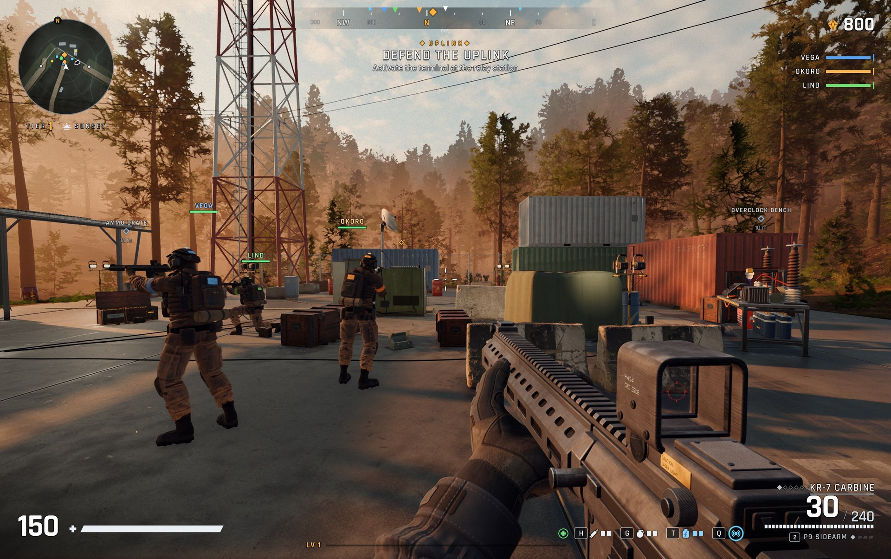
01
Alone or with up to five friends. One of you hosts from the menu; the others join over the local network, or over a VPN such as Tailscale. No account, no server to rent.
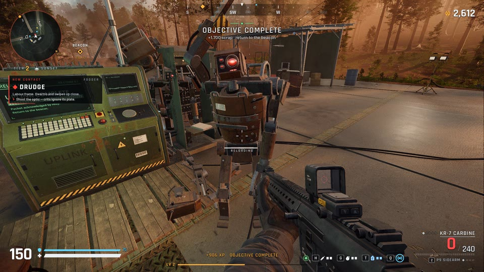
02
Defend the relay while it uploads, walk a rover to the bunker, hunt a Warden, carry power cells to the lift, or destroy three spires. Side work pays extra if you want it.
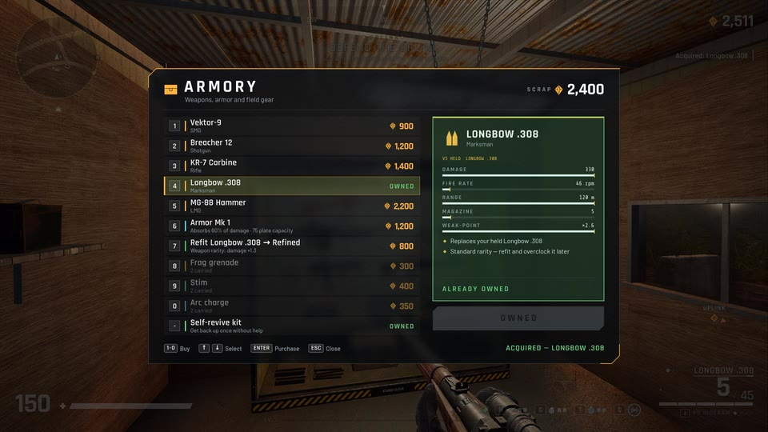
03
An armory, an overclock bench, an augment dispenser, a supply cache. Upgrades show as hardware on the gun in your hands.
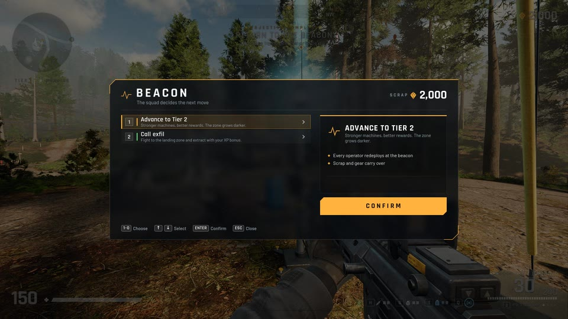
04
At the beacon: the next tier, with heavier machines, better rewards and the day sliding toward night. Or call the exfil and hold the landing zone to bank the run.
03 / Three zones
KR-07
Conifer forest in a valley: a relay yard, a bunker, a logging camp in its clear-cut, a meadow that serves as the landing zone, the cleared lane under the pole line. And the place where the largest piece came down.
KR-12
Where the forest gives out: snowfields under a wall of limestone, seven radio dishes, a cable-tram station, a camp that was left pitched. Aurora at night.
Whiteouts cross the cirque: eight seconds of warning, then half a minute in which you see twelve metres. The machines do not hunt by sight. You fight by map, ping and sound.
KR-09
A limestone quarry in autumn, under gold larch and birch: three benches down to a flooded sump, a cut with a train in it, and at its mouth the crusher plant the machines have made a foundry.
Its rule is height. The machines take the benches above you and fire down, and the train and the hoists are cover that does not stay put.
04 / The machines
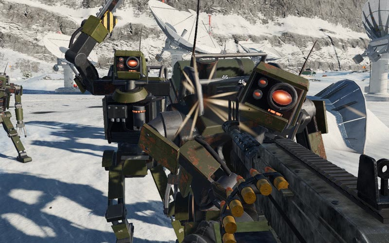
Labour frame. Swarms and swipes up close.
Shoot the optic: crits ignore its plate.
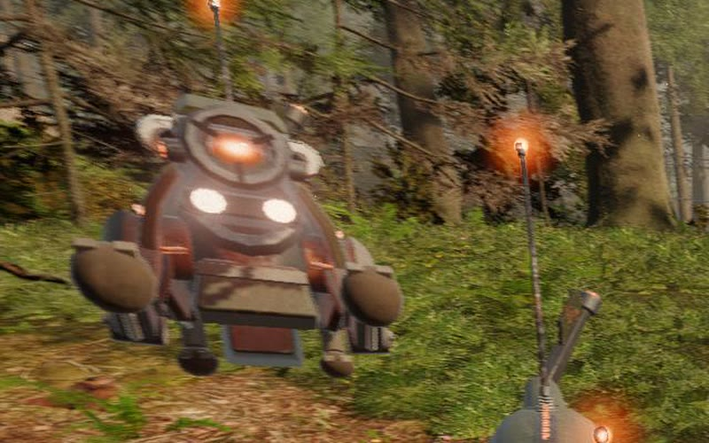
Pack hunter. Flanks you, then lunges.
Keep moving.
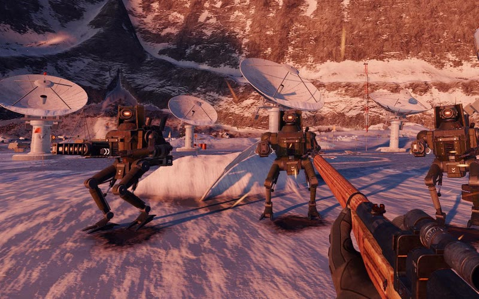
Burst gunner. Punishes open ground.
Take cover. Shoot off its cannon arm.
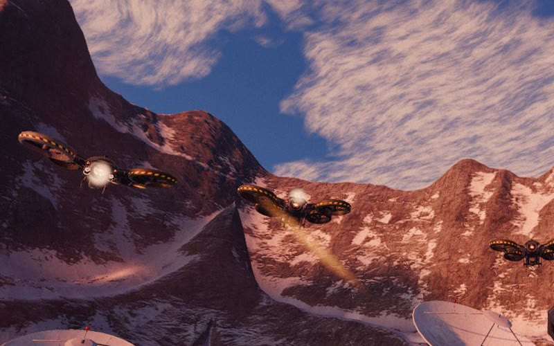
Rotor drone. Hangs still while its nose glows.
Shoot it in the glow: a hit breaks its burst.
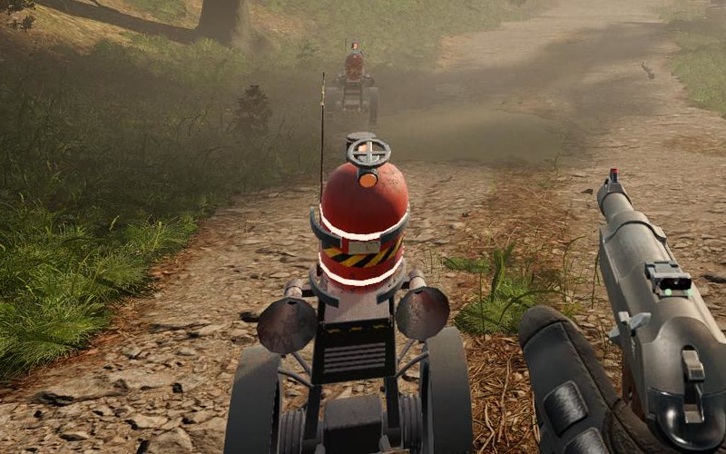
Wailing runner. Explodes when it reaches you.
Shoot it first: its blast kills machines.
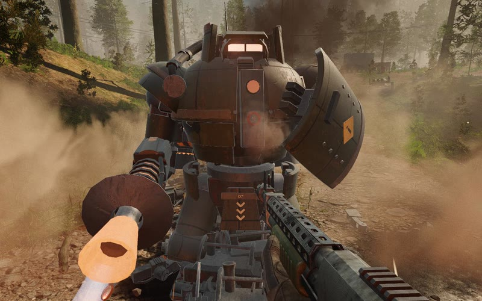
Flame unit. Walks you down, then leaps.
Flank it: shoot the fuel cell on its back.
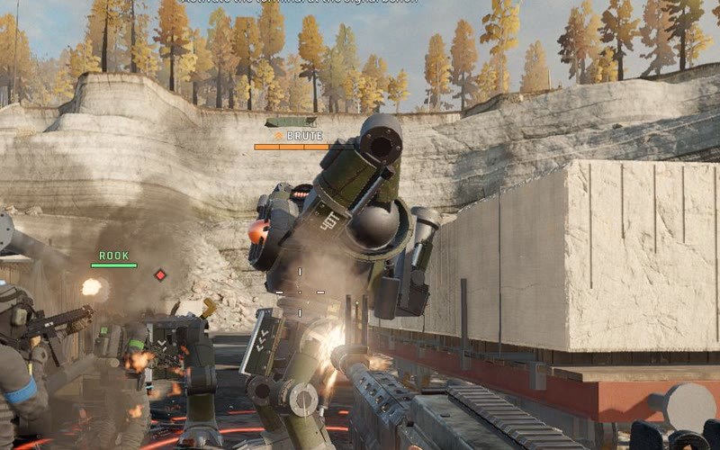
Heavy frame. Slams the ground around it.
Shoot the optic. It may break in two.
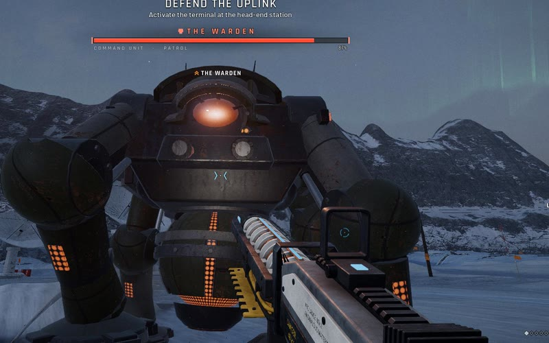
Command unit. Slams, bursts, never tires.
Aim for the core. Bring the whole squad.
The other five you can meet yourself.
05 / Vehicles
Five stand in each zone, one of them where you land: four-seat line UTVs in the Valley and the Cut, two-seat snowmobiles at Highline. The driver drives; everyone else rides in first person with their weapon up.
Machines hear an engine from much further away than a footstep, shoot at whoever sits on it, and get run over by it. The big ones do not give way.
06 / Co-op
The host runs inside the app: solo, host or join from the menu. Revives, pings, a squad list, and a dispatcher on the radio who reads you the weather, the clock and the contract. Something else is on the channel as well.
Mouse and keyboard with every key rebindable, or a controller: the game shows the buttons of the pad in your hands. It measures its own frame rate and sets its graphics to hold the rate you choose.
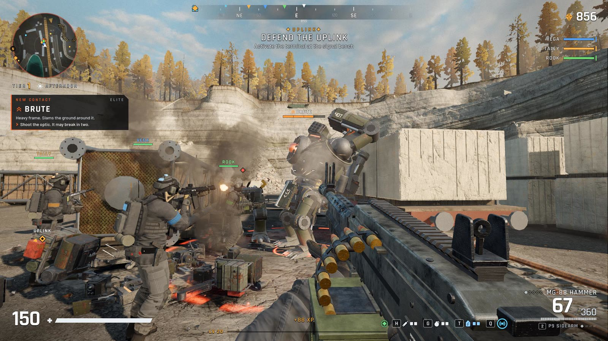
07 / How it was made
Every line of code, every shader, every built model and every synthesised sound in this game was written by an AI agent, directed and play-tested by one person. The scanned rocks, trees, textures and field recordings come from public-domain libraries.
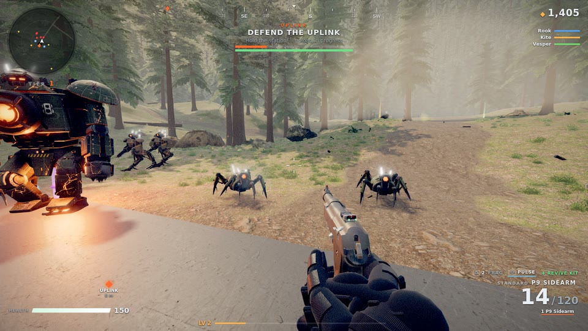
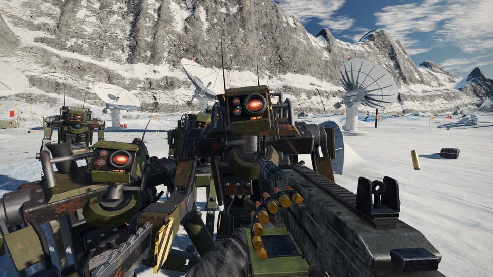
It is a work in progress, not a finished game. The honest notes say where it is rough.
08 / Download
Windows 10 or 11, 64-bit · 1.3 GB
Download StaticRelay-win.zipStatic Relay.exe.Apple silicon and Intel · signed and notarized · 1.3 GB
Download StaticRelay-mac.dmgWhen the menu offers an update, choose Update, then Restart now. Pick a zone and press Play Solo, or host a game for friends on your network.
A graphics card with Vulkan or Direct3D 12 on Windows, Metal on a Mac, about 4 GB of graphics memory free, and 2.5 GB of disk. On integrated graphics and handhelds it runs at reduced quality.
The game talks to its GitHub page to look for updates and looks for hosts on your own network. It sends nothing to any address outside your network or VPN. More.
All releases · Report a problem: a screenshot and what you were doing is plenty.